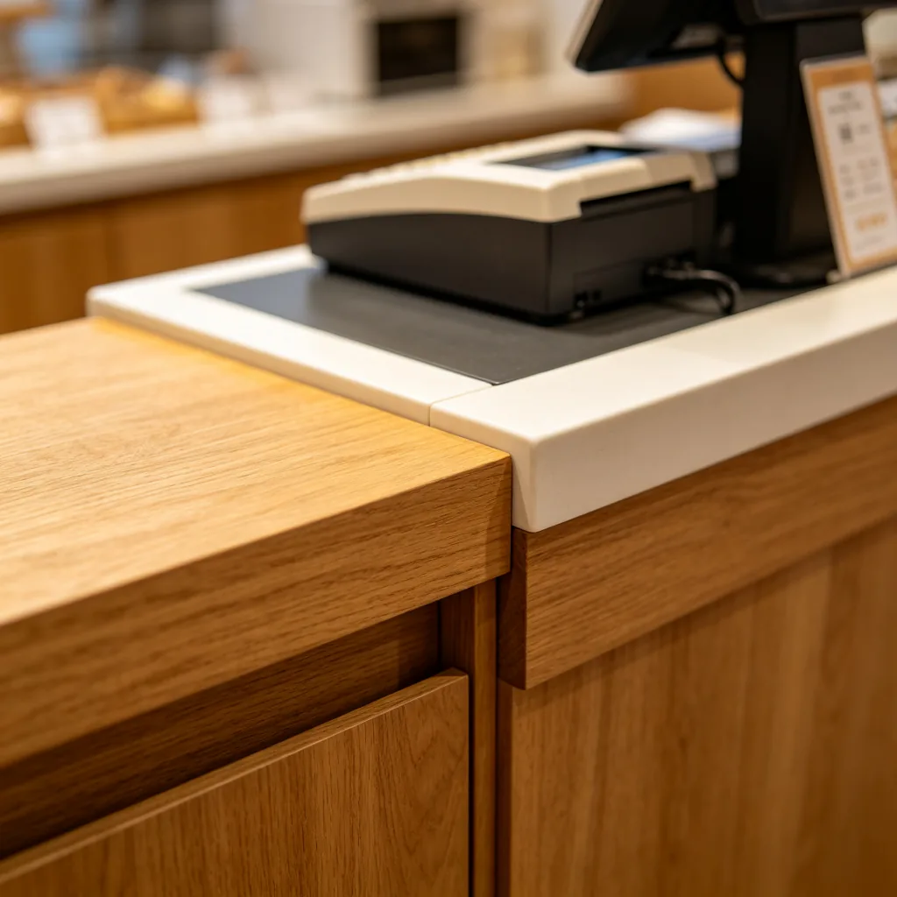

在柔和的燈光下，一隻英國短毛藍貓安靜地坐在那裡，一身藍灰色的濃密毛髮像天鵝絨一樣閃著微光。但最引人注目的是牠的眼睛——一雙圓滾滾的金色大眼睛，在燈光下閃耀著寶石般的光芒，彷彿能看穿你的靈魂。貓咪的眼睛向來是詩人和藝術家靈感的來源，它們的美麗和神秘讓無數人著迷。但你知道嗎，貓咪的眼睛不僅美麗，還隱藏著很多令人驚嘆的秘密。
貓咪眼睛的顏色
貓咪的眼睛顏色多種多樣，從藍色、綠色、黃色、金色到銅色，甚至有異色瞳（兩隻眼睛顏色不同）。眼睛的顏色主要由虹膜中的黑色素含量和分佈決定：

- 藍色眼睛：虹膜中幾乎沒有黑色素，藍色來自光線在虹膜中的散射（類似於天空為什麼是藍色的原理）。藍色眼睛在暹羅貓、布偶貓、喜馬拉雅貓等品種中很常見。所有的小貓出生時都是藍眼睛，大約在4-6週大時，虹膜中的黑色素開始沉積，眼睛顏色會逐漸變化，到3-6個月大時才會穩定下來。
- 綠色眼睛：虹膜中有少量黑色素，結合光線散射產生綠色。綠色眼睛在俄羅斯藍貓、埃及貓、挪威森林貓等品種中較常見。
- 黃色/金色眼睛：虹膜中有適量的黑色素，產生從淡黃到深金的各種色調。金色眼睛在英國短毛貓、美國短毛貓、波斯貓等品種中很常見。英短藍貓的標準眼睛顏色就是金色或銅色，與藍灰色的毛髮形成強烈的對比。
- 銅色眼睛：虹膜中有大量黑色素，產生深紅銅色的眼睛。銅色眼睛在某些波斯貓、英國短毛貓和孟買貓中很常見。
- 異色瞳：兩隻眼睛顏色不同（如一隻藍色、一隻金色），通常是由於基因突變導致一隻眼睛的黑色素沉積異常。異色瞳在白色貓咪中較常見，有時與耳聾有關（藍色眼睛那側的耳朵可能聽力受損）。
貓咪眼睛的超能力
除了美麗，貓咪的眼睛還有很多令人驚嘆的能力：
超強夜視：貓咪的視網膜中有大量的視桿細胞（對光線敏感的細胞），對光線的敏感度是人類的6-8倍。貓咪的眼睛後面還有一層「照膜」（tapetum lucidum），可以反射光線，讓視網膜有第二次機會捕捉光子。這就是為什麼貓咪的眼睛在黑暗中會發光——那是照膜反射的光線。得益於這些結構，貓咪可以在人類幾乎看不見的昏暗光線中看清物體。
寬廣視野：貓咪的雙眼視野大約是200度，比人類的180度更寬。這意味著貓咪可以看到更多兩側的東西，這是作為狩獵者的重要適應。貓咪的立體視覺（雙眼重疊的視野）大約是140度，也比人類的120度稍好，這讓貓咪可以更精確地判斷距離。
敏銳的運動感知：貓咪的視網膜中有專門感知運動的神經元，可以探測到非常微小的移動。研究顯示，貓咪可以看到每秒移動僅1毫米的物體，這種超強的運動感知能力讓貓咪可以在昏暗的光線中快速發現並追蹤獵物。
第三眼瞼：貓咪有一層人類沒有的「第三眼瞼」（也稱為瞬膜），位於眼睛的內側角落。這層眼瞼可以橫向移動，覆蓋整個眼球，起到保護、清潔和濕潤眼睛的作用。在正常情況下，第三眼瞼是隱藏在眼角的，不太容易看到。但當貓咪生病、疲勞或眼睛受傷時，第三眼瞼可能會凸出來。
貓咪的近視和色盲
雖然貓咪的夜視和運動感知能力很強，但牠們也有弱點：1. 近視：貓咪是天生的近視眼，視力大約是人類的20/100到20/200也就是說，人類在20公尺處能看清的東西，貓咪需要走到5-10公尺處才能看清。貓咪也看不清楚30公分以內的東西，這就是為什麼貓咪有時會找不到你放在牠鼻子前面的零食。2. 色盲：貓咪只能看到藍色和黃色調，對紅色和綠色的感知較弱。對貓咪來說，世界的顏色比較柔和，有點像褪色的照片。不過，貓咪主要依賴嗅覺和聽覺來感知世界，視覺的弱點並不影響牠們的日常生活。
金色眼睛的英短藍貓，用牠的美麗和神秘，成為了無數貓奴心中的摯愛。貓咪的眼睛不僅是靈魂的窗戶，更是千萬年演化的傑作——它們讓貓咪成為了黑夜中最完美的狩獵者，也讓人類在與貓咪的對視中，感受到了一種難以言喻的神秘和溫柔。或許，這就是為什麼我們總是忍不住盯著貓咪的眼睛看——因為在那雙金色的眼睛裡，我們看到了一個古老而神秘的世界。